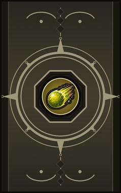
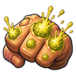
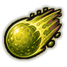
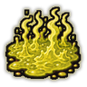
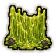
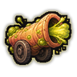
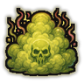
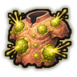
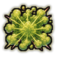
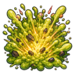

Technique trees › Clans and bloodlines
Ranzige clan
10 techniques in the Clan tab.
Needs the Ranzige gene.

Pus Knuckles C
Chakra 10. Grow huge pimples on the knuckles that burst on every punch, for half an hour.
Pus Knuckles C
Chakra 10. Grow huge pimples on the knuckles that burst on every punch, for half an hour.
Grow huge pimples on the knuckles that burst on every punch, for half an hour.
| Rank | Chakra | Cooldown | Class level |
|---|---|---|---|
| C | 10 | 1 hour | 3 |

Kanonskogel: Cannonball CA
Chakra 15 to 30. Shoot a compressed ball of stomach acid. The pus rifle fires one heavy round.
Kanonskogel: Cannonball CA
Chakra 15 to 30. Shoot a compressed ball of stomach acid. The pus rifle fires one heavy round.
Shoot a compressed ball of stomach acid. The pus rifle fires one heavy round.
| Rank | Chakra | Cooldown | Class level |
|---|---|---|---|
| C | 15 | 12 s | 4 |
| A | 30 | 15 s | 12 |
Snot Kooi: Snot Cage C
Chakra 15. Shoot extremely sticky snot that pins an enemy down.
Snot Kooi: Snot Cage C
Chakra 15. Shoot extremely sticky snot that pins an enemy down.
Shoot extremely sticky snot that pins an enemy down.
| Rank | Chakra | Cooldown | Class level |
|---|---|---|---|
| C | 15 | 25 s | 5 |

Vuig Veld: Dirty Field C
Chakra 25. Spray a field of stomach acid that burns anything standing in it for five seconds.
Vuig Veld: Dirty Field C
Chakra 25. Spray a field of stomach acid that burns anything standing in it for five seconds.
Spray a field of stomach acid that burns anything standing in it for five seconds.
| Rank | Chakra | Cooldown | Class level |
|---|---|---|---|
| C | 25 | 1 hour | 6 |

Snot Muur: Snot Wall C
Chakra 25. A sticky wall of snot around a spot catches enemy shots for twenty seconds.
Snot Muur: Snot Wall C
Chakra 25. A sticky wall of snot around a spot catches enemy shots for twenty seconds.
A sticky wall of snot around a spot catches enemy shots for twenty seconds.
| Rank | Chakra | Cooldown | Class level |
|---|---|---|---|
| C | 25 | 1.2 hours | 7 |

Gas Howitzer B
Chakra 25. Fire a compressed blast of gas that knocks enemies flying.
Gas Howitzer B
Chakra 25. Fire a compressed blast of gas that knocks enemies flying.
Fire a compressed blast of gas that knocks enemies flying.
| Rank | Chakra | Cooldown | Class level |
|---|---|---|---|
| B | 25 | 20 s | 8 |

Geurig Rookscherm: Odorous Smokescreen BA
Chakra 25 to 45. Fill an area with a choking, stinking cloud. Aromatic Death is a lingering toxic gas.
Geurig Rookscherm: Odorous Smokescreen BA
Chakra 25 to 45. Fill an area with a choking, stinking cloud. Aromatic Death is a lingering toxic gas.
Fill an area with a choking, stinking cloud. Aromatic Death is a lingering toxic gas.
| Rank | Chakra | Cooldown | Class level |
|---|---|---|---|
| B | 25 | 33 s | 9 |
| A | 45 | 1.6 hours | 14 |

Pus Reactive Armour A
Chakra 35. Pimples that burst outward when struck, blunting every blow, for half an hour.
Pus Reactive Armour A
Chakra 35. Pimples that burst outward when struck, blunting every blow, for half an hour.
Pimples that burst outward when struck, blunting every blow, for half an hour.
| Rank | Chakra | Cooldown | Class level |
|---|---|---|---|
| A | 35 | 1.4 hours | 13 |

Aromatische Schokgolf: Aromatic Shockwave BS
Chakra 30 to 60. A blast of gas in all directions knocks everyone close away.
Aromatische Schokgolf: Aromatic Shockwave BS
Chakra 30 to 60. A blast of gas in all directions knocks everyone close away.
A blast of gas in all directions knocks everyone close away.
| Rank | Chakra | Cooldown | Class level |
|---|---|---|---|
| B | 30 | 25 s | 10 |
| S | 60 | 1.2 hours | 17 |

Pus Vloedgolf! Pus Tsunami! S
Chakra 80. S-rank: a huge field of exploding pus.
Pus Vloedgolf! Pus Tsunami! S
Chakra 80. S-rank: a huge field of exploding pus.
S-rank: a huge field of exploding pus.
| Rank | Chakra | Cooldown | Class level |
|---|---|---|---|
| S | 80 | 4 hours | 18 |
Chakra is the technique's base cost, the number in its def. In play it is multiplied by the pawn's chakra energy usage multiplier, which traits (chakra artificer 90%, volatile conduit 110%), World of Naruto genes and jutsu enhancements change, so the technique window can show a slightly different number for each ninja. Cooldowns are in-game time, as the technique window shows them, and the pawn's cooldown stat shortens or lengthens them. World of Naruto gives every ninja a base of 100 maximum chakra; genes and traits change it.